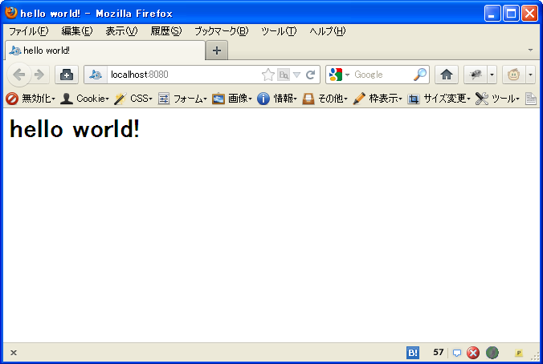

アプリケーションを作成する¶
AppEngine用のアプリケーションを作成します。
新規にアプリケーションを作成する¶
新規アプリケーションの作成は scaffold コマンドを実行します。 このドキュメントでは engineapp という名前のアプリケーションを作成します。
$ scaffold create tokky.appengine.core
application_name: engineapp
これで雛型からアプリケーションディレクトリが作成されました。
AppEngineの開発サーバを起動して、確認してみます。
$ cd engineapp
$ dev_appserver.py .
起動したアドレスをウェブブラウザで開いてみてください。 何も設定していない状態では 404 not Found. と表示されるはずです。
トップページを有効にする¶
トップページを有効にしてみましょう。
engineapp ディレクトリ内の config.py というファイルをエディタで開き、 APPS の toppage と書かれた行のコメントアウトを消してください。
# installed apps
APPS = [
(r'^/$', 'apps.toppage.application'),
]
これでトップページが有効になりました。 保存して、ウェブブラウザでもう一度開いてみると、 hello world! と表示されます。
トップページのテンプレートを変更する¶
有効にしたトップページの表示を変更してみましょう。
このページは Django テンプレート ファイルからHTMLを生成しています。 テンプレートファイルは engineapp/templates/index.html にあります。
ファイルを次のように編集して保存します。
<html>
<head>
<meta http-equiv="Content-type" content="text/html; charset=UTF-8"/>
<title>こんにちは世界！</title>
</head>
<body>
<h1>こんにちは世界！</h1>
</body>
</html>
ノート
日本語の内容を含むテンプレートファイルは、文字コードをUTF-8にして保存します。
ウェブブラウザでトップページをリロードすると、表示が変更されたことを確認できます。

仕組みを知る¶
テンプレートファイルを使用してページを表示する仕組みについて見てみましょう。
トップページのアプリケーションハンドラは、 engineapp/apps/toppage.py モジュールにあります。 ファイルをエディタで開いてみて見ましょう。
解説のコメントを加えたものを次に示します。
from google.appengine.ext import webapp
from core.generics import TemplatePageHandler
import config
# テンプレートファイルを使ってページを表示するクラスの定義
class TopPageHandler(TemplatePageHandler):
template_name = 'templates/index.html' # このハンドラで使うテンプレートのパス
# このトップページアプリケーションのエントリーポイント(WSGIアプリケーション)
# webapp.WSGIApplicationをそのまま使用します
application = webapp.WSGIApplication([
(r'/', TopPageHandler),
], debug=config.DEBUG)
ここで使用している TemplatePageHandler は、 webapp.RequestHandler を継承したクラスです。 TemplatePageHandler は template_name で使用するテンプレートファイルのパスを指定します。
モジュール内で定義された application は webapp.WSGIApplication を使用したWSGIアプリケーションの形になっています。 最初に書き換えた config.py の APPS 部分をもう一度見てみましょう。
# installed apps
APPS = [
(r'^/$', 'apps.toppage.application'),
]
APPS のリスト内には、正規表現とアプリケーションハンドラ(WSGIアプリケーション)のインポート名をタプルで記述しています。 tokky.appengine.core では、このリスト内のタプルを順に参照し、URLに最初にマッチしたアプリケーションハンドラをロードして実行します。
アプリケーションハンドラはURLにマッチしない限り、ロードされません。これは、スピンアップ時のパフォーマンス向上と、メモリ使用量の節約にも貢献しています。